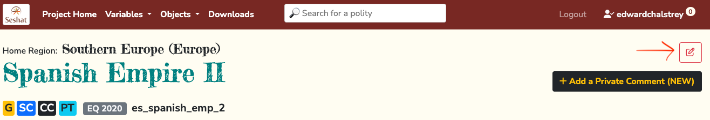
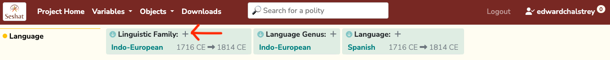
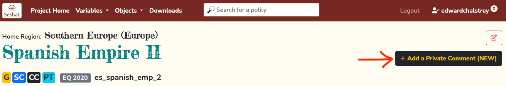
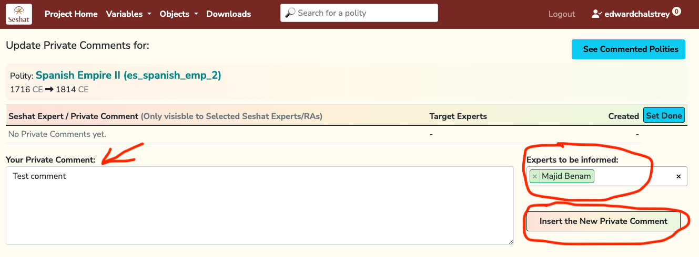
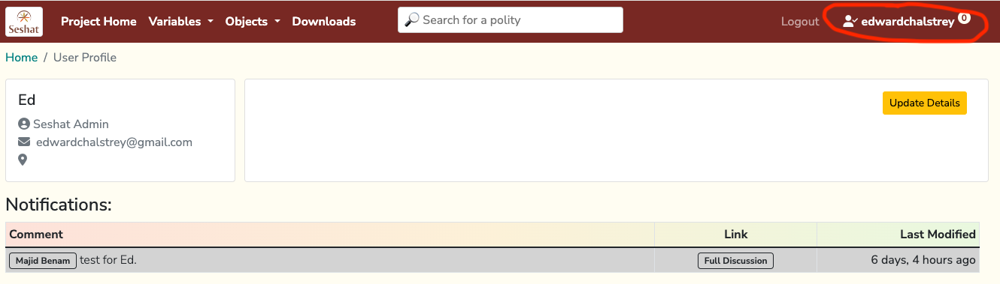
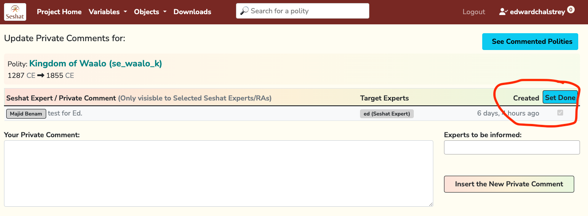

Getting started with Seshat data
This section of the documentation provides information on how to get started with accessing Seshat data as a researcher, both through the Seshat website and the Seshat API, as well as the Cliopatria borders GeoJSON dataset.
Creating a login on the Seshat website
Creating an account on the Seshat website is the first step to accessing the Seshat data. You can do this by visiting the Seshat website and clicking the “Sign up” button in the top right corner.
Follow the information on the screen to create your account.
Ensure you are given the correct permissions for your account by contacting the Seshat team. See the team page for more information. For most researchers on the project, this will involve being given the “Research Assistant” role permissions, which allows you to make and discuss data edits.
Warning
🚧 TODO: We should add a video here showing how to make data edits and discuss them via private comments, since the below sections only cover the basics. 🚧
Making data edits
Once you have created an account and been given the correct permissions, you can start making and approving data edits on the Seshat website.
Navigate to a polity page and click either on the pen button near the top to edit general Polity details, or the + button on a particular variable of interest.
Editing polity info:
Editing a variable:

Fill out the edit page that opens and submit for review.
Warning
🚧 TODO: We should add an explanation of the approval process for handling the edits after they are submitted for review. 🚧
Discussing data edits via private comments
In addition to editing the data directly, you can start a “private comment” discussion about a potential data edit, which other researchers can see and comment on. Users that lack sufficent permissions, and people not logged in, will not be able to see these comments. You can assign a specific person to the comment, if you know their particular expertise is needed. See the team page for more information.
To create a new private comment:
Navigate to a polity page and click the “Add a Private Comment” button.
Write your comment and assign someone to look at it, if needed, then click the insert button.

If someone has assigned a comment to you:
You will see a notification in the top right corner of the website. Click this to view all the comments assigned to you.
Click on the comment to view it and respond. Once the discussion thread is completed, the comment can be marked as resolved by checking the checkbox next to the comment and then clicking the “Set Done” button.

Tip
You can see all the polities with comments on them by visiting the Polities with Comments page.